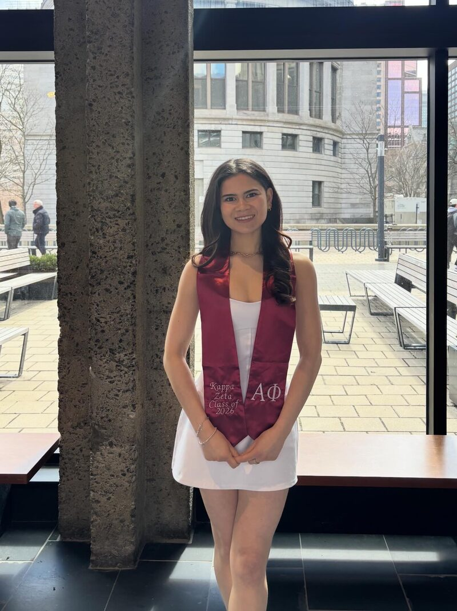

The
full picture.
Psychology student. Neuroscience researcher. Product builder. Always in pursuit of the next hard problem.

Researcher by training,
builder by choice.
I'm a psychology student at McGill University, where I spend most of my time thinking about why people do what they do — and then building things that account for it. My academic work sits at the intersection of cognitive neuroscience, behavioral science, and philosophy of mind. My extracurricular work sits at the intersection of startups, law, and campus leadership.
Before McGill, I completed my high school education at Stanford University Online High School, where I developed the research instincts and disciplined thinking that have since defined how I approach every project. That early exposure to Stanford's academic culture — and later, hands-on work at both the SPARK Lab and Stanford Medicine's cardiovascular surgery program — gave me an unusually applied lens for someone still in undergrad.
At McGill, I've tried to do work that actually moves things. As Chief Executive Communications Officer at the Undergraduate Law Review, I manage editorial pipelines and direct strategy across a publication read by hundreds. On the CaPS Advisory Board, I've helped shape how a major university career services office reaches students. And through my current research role at MOGILab, I'm contributing to peer-reviewed work on pain perception and social modulation with PI Jeffrey Mogil.
I'm building toward a career that integrates rigorous analysis with institutional impact — whether that's in management consulting, research strategy, or product at the intersection of psychology and technology. I'm drawn to organizations that take ideas seriously and hold themselves to high standards. I'm currently finishing my B.A. (graduating December 2026) and am available full-time from January 2027 — with work authorization in the U.S., Singapore, and the U.K. — for roles in New York City and Houston.
Academic foundation.
Minors: Entrepreneurship & Philosophy
GPA: 3.74
Live, seminar-style classes taught by PhD-level faculty
GPA: 3.8 / 4.0
Stanford Online High School is an accredited independent school run within Stanford University for academically advanced students in grades 7–12, with students from across the U.S. and around the world. Classes are small, live, discussion-based seminars, not recorded lectures. Most instructors hold doctorates, and every student completes a required philosophy and critical-reasoning core. Advanced students take university-level coursework.
It is consistently ranked among the best private high schools in America. In 2025, Niche ranked it #10 nationally and #2 in California. There I wrote my first full research paper, on access to defibrillators, which you can read on my Writing page.
Duke TIP was Duke University's nonprofit program for identifying and serving academically gifted students. Its 7th Grade Talent Search invited only students who scored at or above the 95th percentile on a grade-level standardized test.
Qualifiers then took the SAT or ACT in seventh grade, the same exam college-bound high school juniors and seniors take. The above-level test measured how far a student's reasoning ran ahead of their grade, and it opened access to TIP's advanced academic programs and recognition.